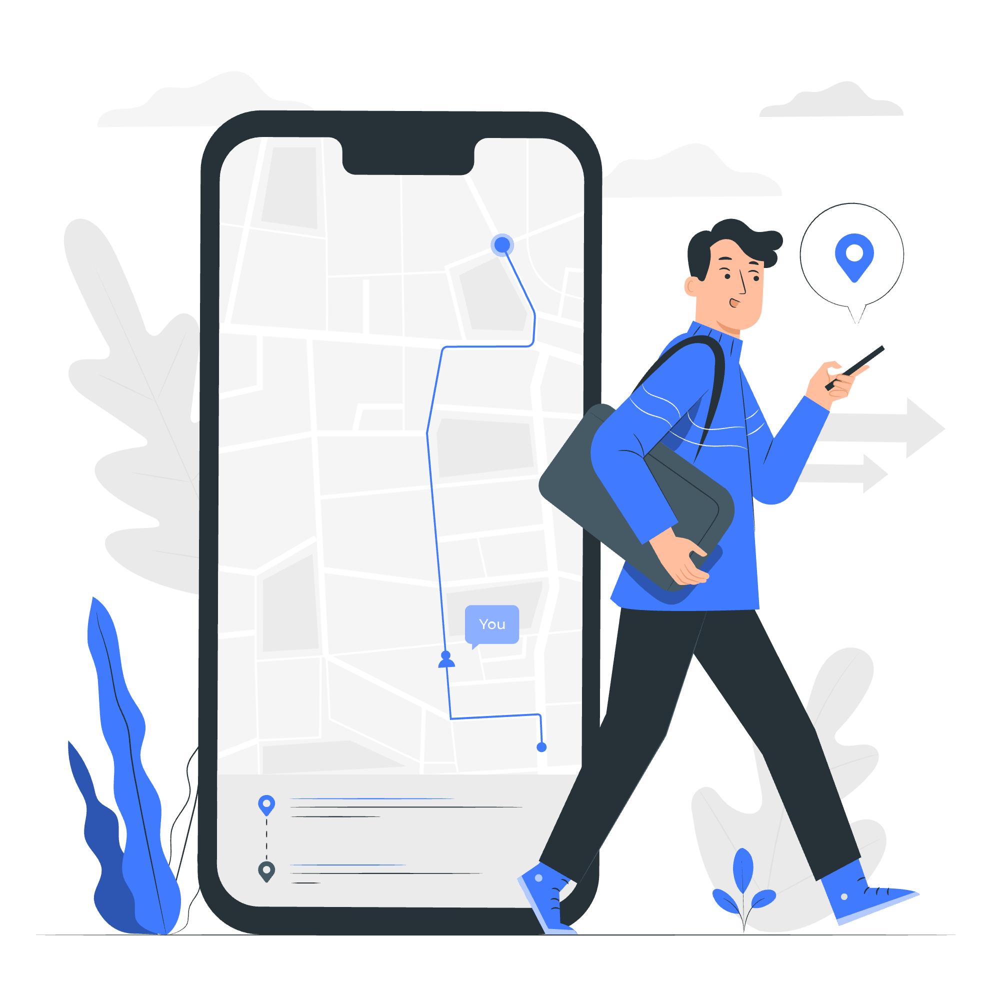

Acerca de Baku
Baku nace de la necesidad de contar con una fuente confiable en línea sobre horarios y rutas del transporte público en Nicaragua.
Es una plataforma informativa que facilita la planificación de viajes con datos actualizados, consejos útiles y horarios recomendados por usuarios, ideal para quienes desean explorar el país en medios locales.

Recomendaciones Baku
Baku te muestra lo mejor de Nicaragua, con destinos accesibles en transporte público. ¡Prepárate para explorar!